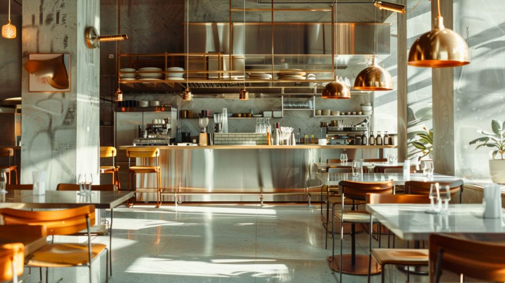
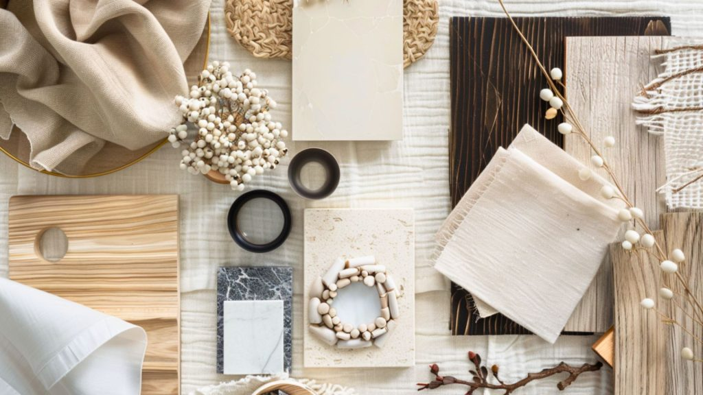
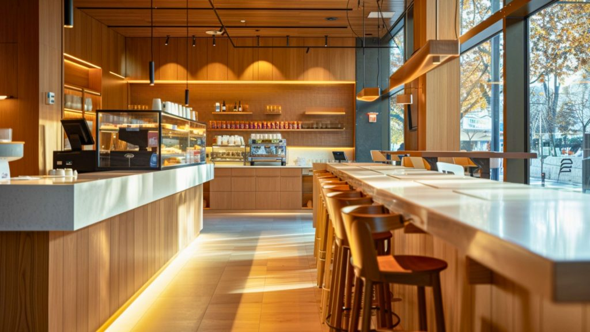
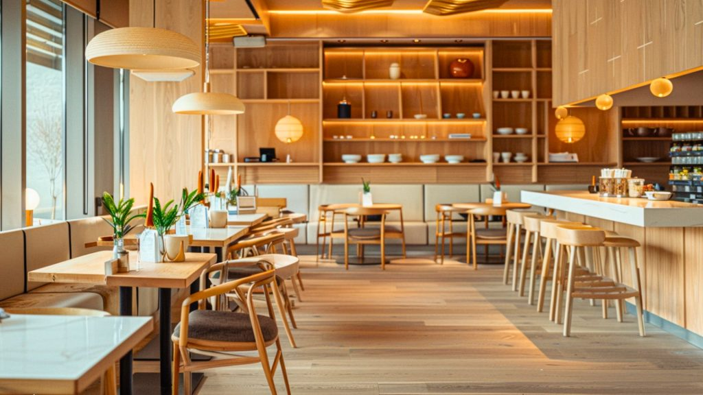
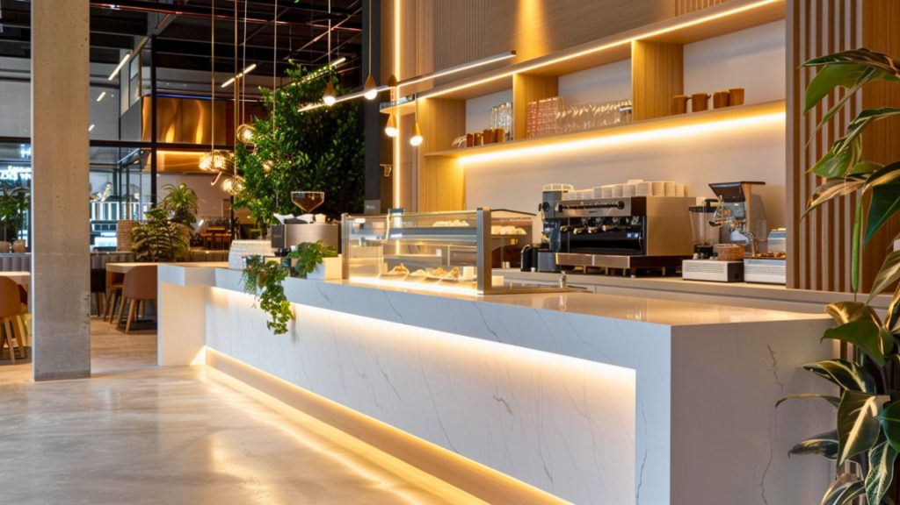
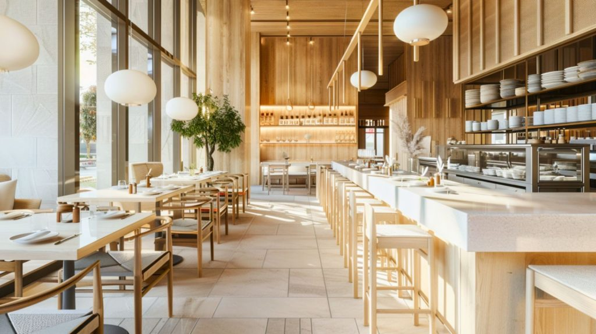

In restaurant design, space is a luxury — but perception is power. Even when square footage is limited, the right materials and finishes can make a compact outlet look expansive, bright, and thoughtfully designed.
The secret involves understanding how texture, tone, and reflection influence guest experience. In 2025, designers are leveraging material psychology alongside material science to create interiors that don't just save space, but establish it.
1. The Illusion of Space Is Sensory, Not Structural

Spaciousness in restaurants relates to the sensory experience — the way light bounces, the warmth of textures, and the airiness of surfaces.
Design principle: "You don't always need more space. You need smarter materials."
2. Lighter Woods: Birch and Light Oak for Warmth & Openness

Lighter wood tones like birch and light oak are redefining furniture design in 2025, introducing airiness and calm.
Why it works:
- Reflects natural and artificial light beautifully
- Adds warmth without heaviness
- Complements both minimalist and earthy interiors
Application: Use for tabletops, wall claddings, or ceiling panels to make compact dining areas feel more breathable and organic.
3. Metal Accents: Minimalism Meets Durability

When used appropriately, metal brings confidence without coldness. Metal frames, trims, and detailing add structure and sophistication while maintaining an uncluttered visual language.
Benefits:
- High durability in high-traffic zones
- Ideal for modular or foldable furniture systems
- Reflective surfaces subtly open up enclosed spaces
In 2025, designers favor brushed bronze and matte black metals — balancing strength with a muted, modern aesthetic.
4. Compact Laminate and Quartz: Sleek, Clean, and Space-Efficient

Compact laminate and quartz have become designer favorites for restaurants seeking both beauty and resilience.
Why they're trending:
- Easy to clean and maintain — critical for high-turnover outlets
- Smooth, reflective finishes amplify light and airiness
- Perfect for countertops, bar areas, and service counters
These finishes bring refinement that feels high-end without overcrowding the visual palette.
5. Layering Textures Without Adding Weight

Maximizing space doesn't require going flat. Layering textures — matte, gloss, woodgrain, and metal — adds depth and character without heaviness.
Suggested combination: Birch wood furniture with matte black metal legs and a soft quartz counter creates textural interplay while maintaining visual flow.
6. Designing for Reflection, Not Clutter

In tight spaces, light functions as your biggest ally. Use reflective finishes, metallic trims, and soft-gloss surfaces to enhance brightness and openness.
Avoid heavy, dark materials that absorb light — they visually shrink the room. Instead, select tones that bounce light back into the space, creating a subtle expansion illusion.
Conclusion: Every Surface Shapes Perception
The smartest restaurant interiors of 2025 aren't necessarily the biggest — they're the most intentionally designed. By choosing the right mix of materials and finishes, you can create a space that feels twice as large, twice as inviting, and infinitely more memorable.
"Great design doesn't just fill a space — it transforms it."
Looking to make the most of a compact outlet? At SprintCo, we design restaurant interiors that maximize every square foot without compromising on brand or experience. Let's talk about your space — contact us today!